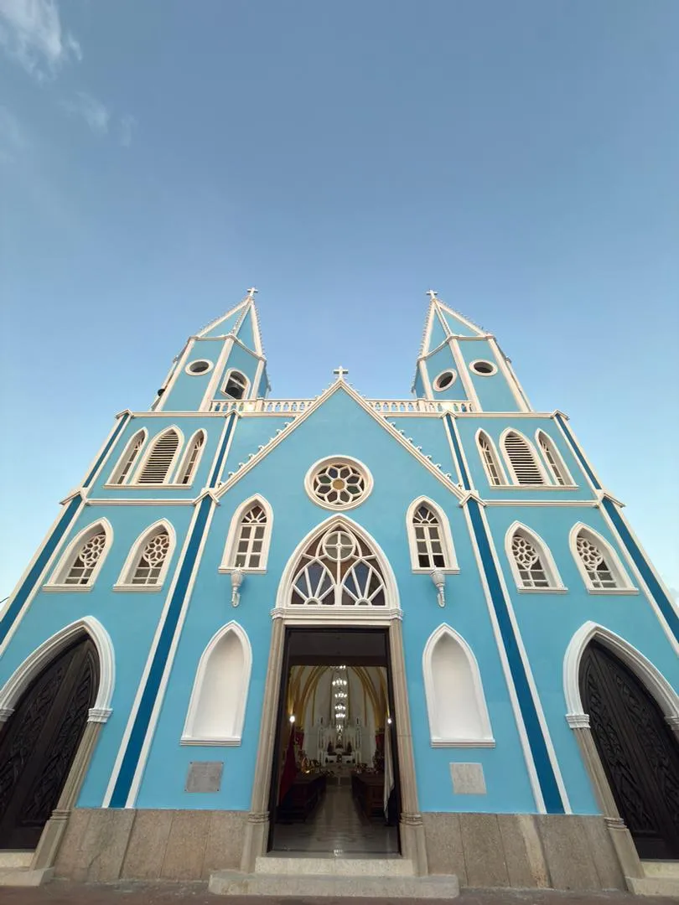
La Casita Azul de El Empedrao
Luz y fe en el corazón de Maracaibo
Arquidiócesis de Maracaibo
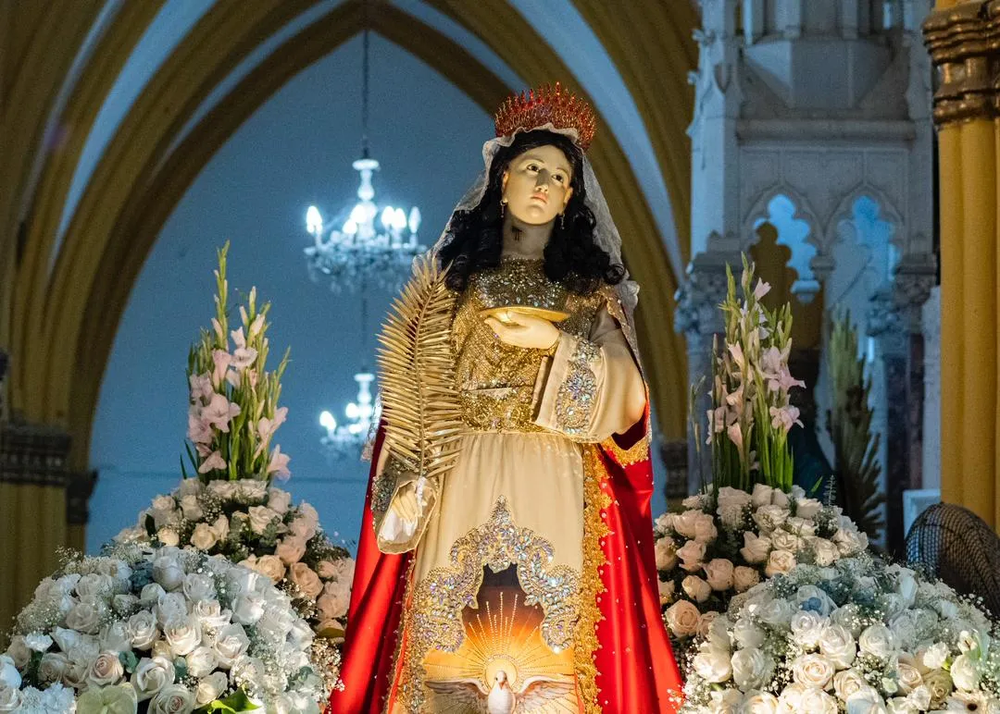
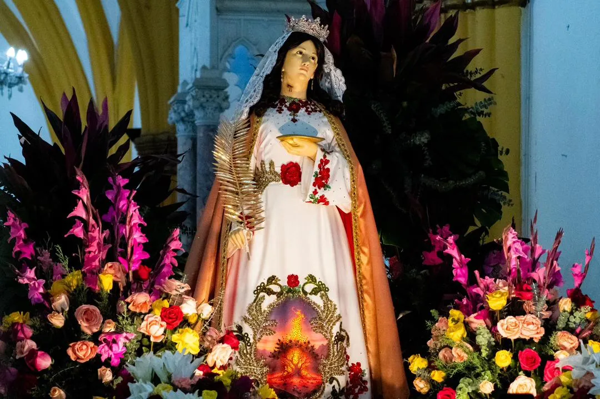
Su nombre significa «portadora de luz»
La Reina de El Empedrao
En Maracaibo, la devoción más arraigada después de Nuestra Señora de Chiquinquirá
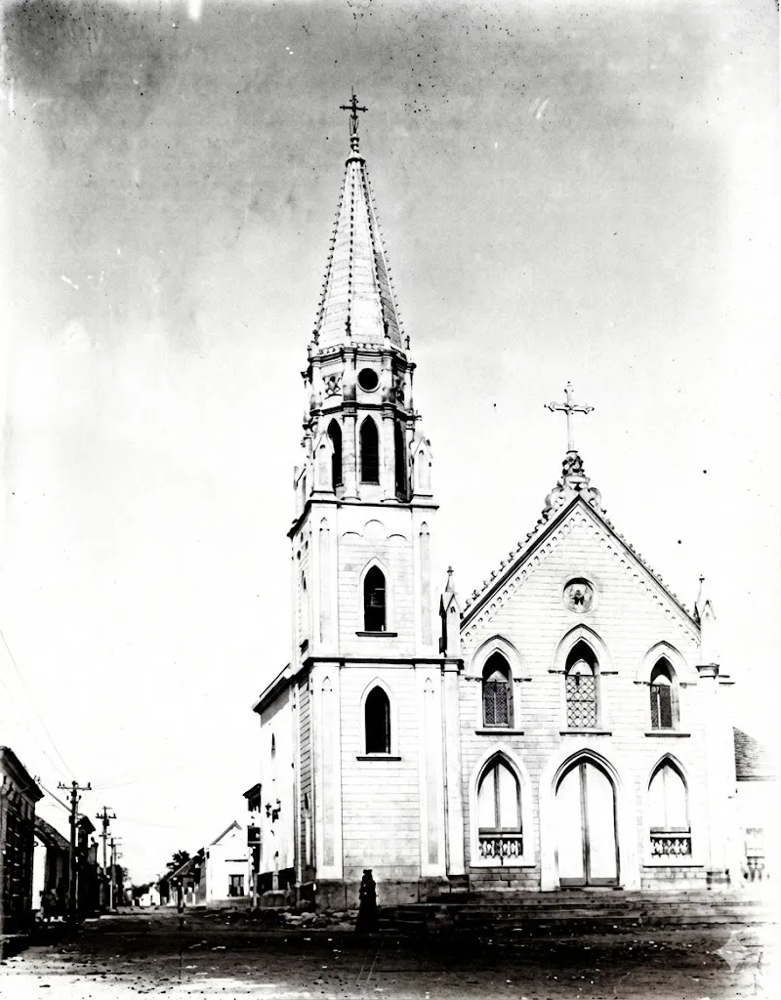
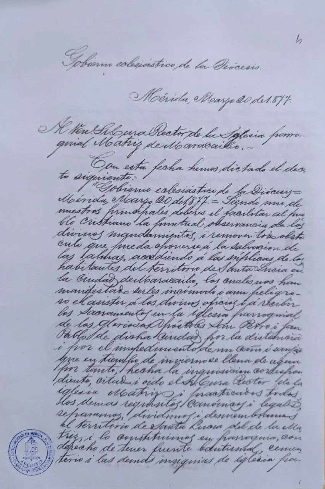
1834 · Los vecinos sueñan con su propio templo
1867–1876 · Se construye el templo neogótico
20 de marzo de 1877
La Diócesis de Mérida erige la parroquia de Santa Lucía
Siglo XX · El templo se reconstruye con el esfuerzo de la feligresía
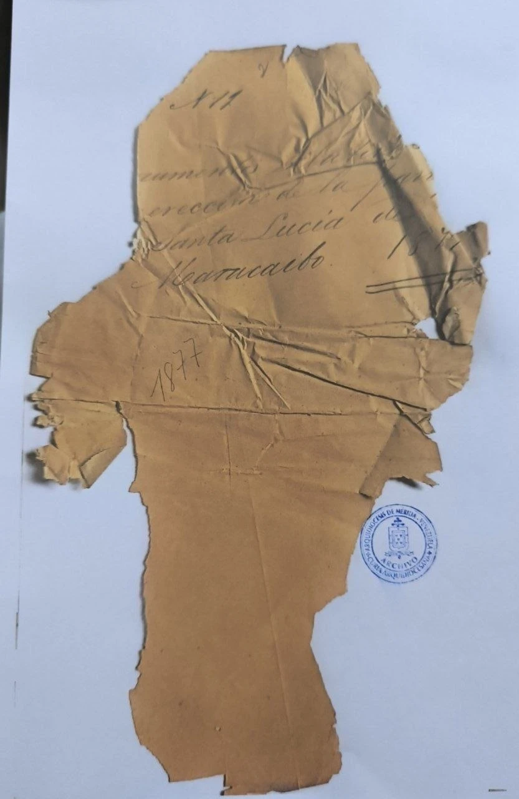
Fieles a la tradición. Abiertos a la misión.
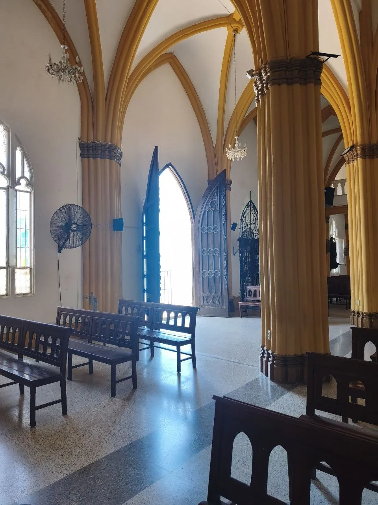
Los lunes no hay Misa
Confesiones: media hora antes de cada Misa
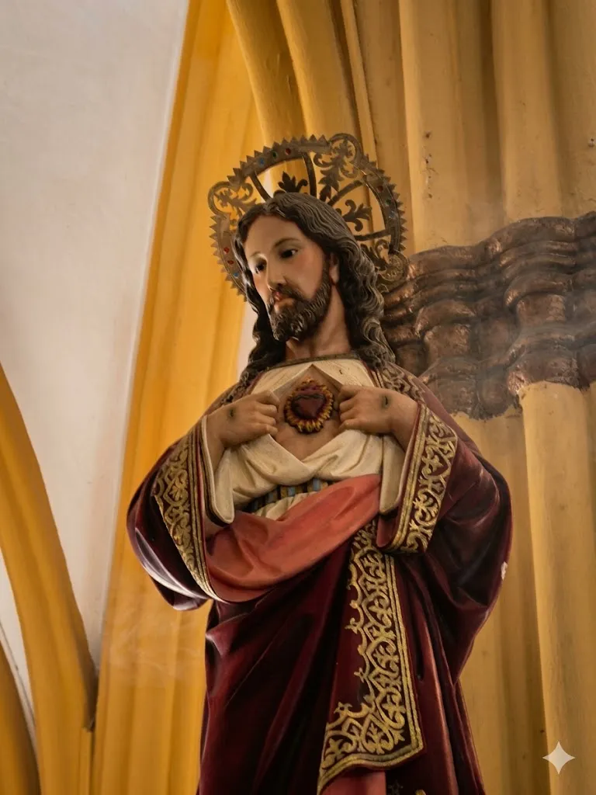
1 · Eliges el trámite en la web
2 · WhatsApp se abre con el mensaje ya escrito
3 · La secretaría te responde con los pasos
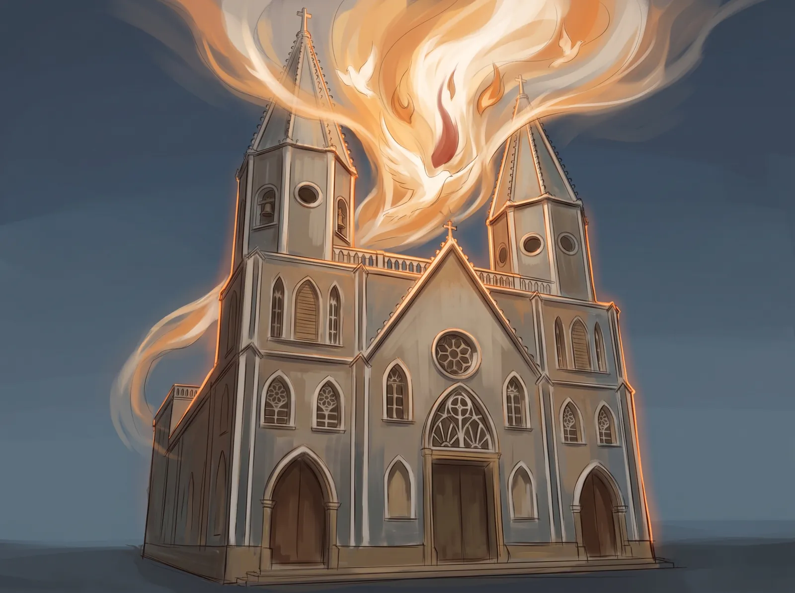
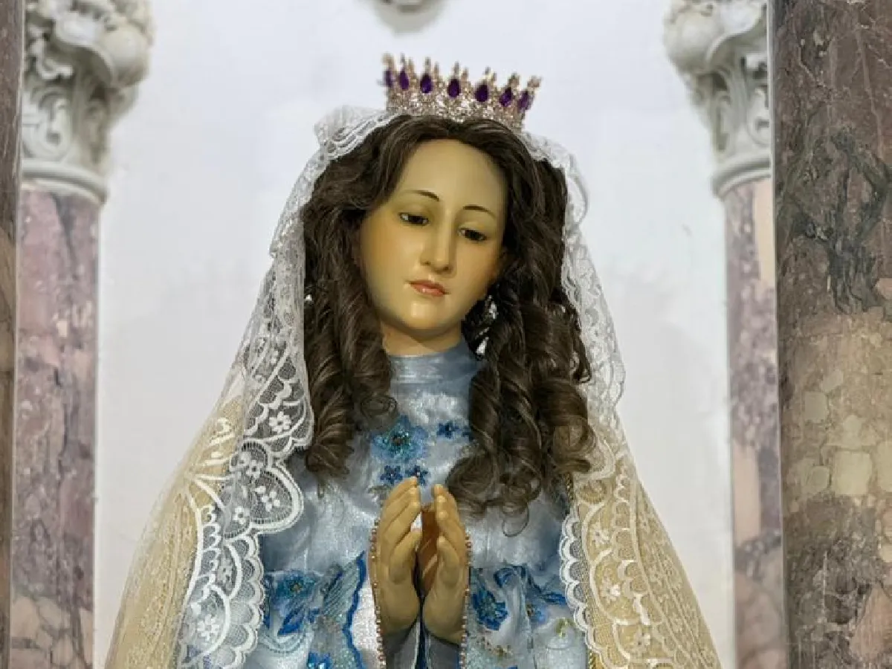
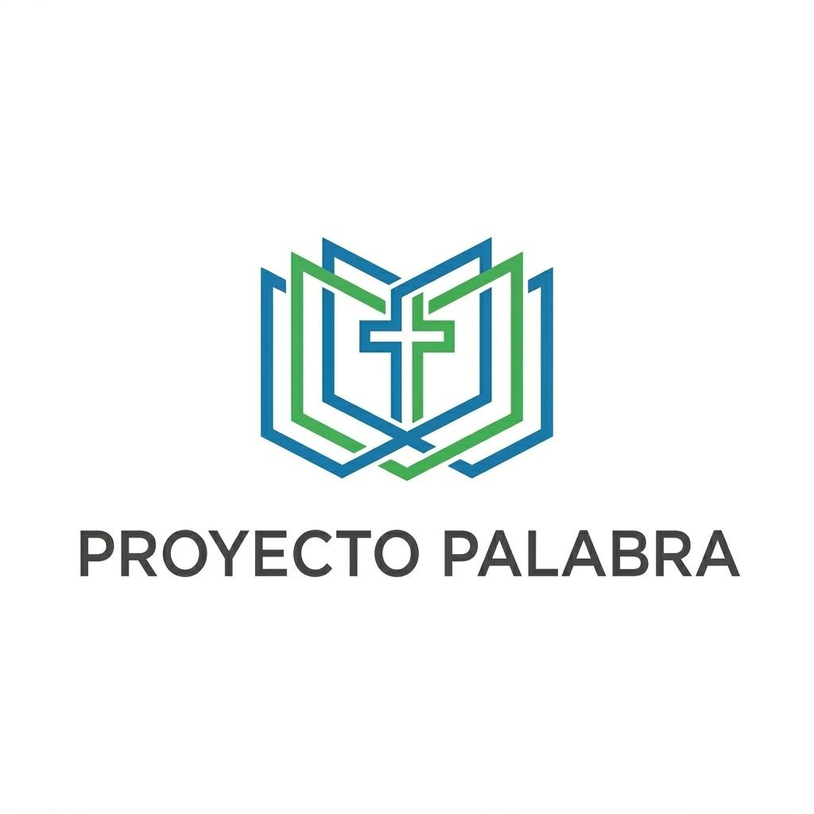
Vecinos que leen el Evangelio del domingo y sirven a su cuadra
Ya están creciendo en nuestros sectores
Funcionan sin conexión
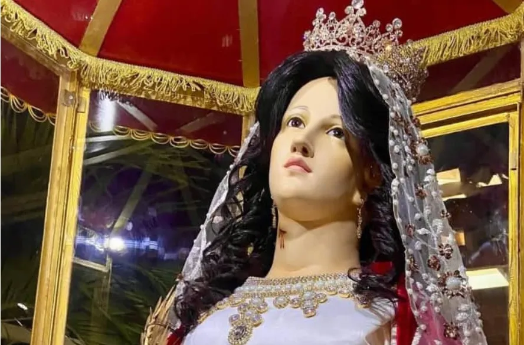
de diciembre
Gran fiesta patronal de Santa Lucía
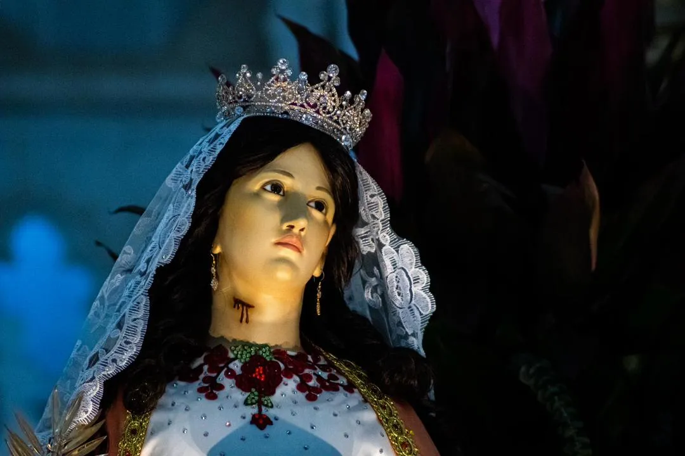
Hay un lugar reservado para ti
La Casita Azul de El Empedrao